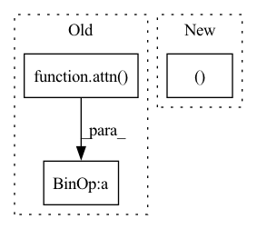

Pattern ID :18263
Before Change
// latent self attention
for attn, ff in self.latent_self_attns:
latents = attn( latents, time = t) + latents
latents = ff(latents, time = t) + latents
// additional patches self attention with linear attention
patches = self.patches_self_attn(patches, time = t) + patches
patches = self.patches_self_attn_ff(patches) + patches
// patches attend to the latents
patches = self.latents_attend_to_patches(patches, latents, time = t) + patches
patches = self.patches_cross_attn_ff(patches, time = t) + patches
// to pixels
After Change
// the recurrent interface network body
for block in self.blocks:
patches, latents = block(patches, latents, t)
// to pixels
In pattern: SUPERPATTERN
Frequency: 3
Non-data size: 3
Instances Fragment ID: 59918592
Project Name: lucidrains/recurrent-interface-network-pytorch
Commit Name: a81dbfaf9e61843bc0da154cf547099de9ffc093
Time: 2022-12-26
Author: lucidrains@gmail.com
File Name: rin_pytorch/rin_pytorch.py
M Class Name: RIN
N Class Name: RIN
M Method Name: forward(6)
N Method Name: forward(6)
M Parent Class: nn.Module
N Parent Class: nn.Module
M File Name: rin_pytorch/rin_pytorch.py
N File Name: rin_pytorch/rin_pytorch.py
M Start Line: 372
M End Line: 411
N Start Line: 403
N End Line: 425
Before Change
// pairwise attention and transition
x = attn( x, mask = mask)
x = ff(x) + x
return x, m
After Change
msa_mask = None
):
inp = (x, m, mask, msa_mask)
x, m, *_ = checkpoint_sequential(self.layers, 1, inp)
return x, m
class Alphafold2(nn.Module): Fragment ID: 59918598
Project Name: lucidrains/alphafold2
Commit Name: 597762beedef6ecbf24f630ad62acbd76050f7d4
Time: 2021-08-04
Author: lucidrains@gmail.com
File Name: alphafold2_pytorch/alphafold2.py
M Class Name: Evoformer
N Class Name: Evoformer
M Method Name: forward(5)
N Method Name: forward(5)
M Parent Class: nn.Module
N Parent Class: nn.Module
M File Name: alphafold2_pytorch/alphafold2.py
N File Name: alphafold2_pytorch/alphafold2.py
M Start Line: 425
M End Line: 436
N Start Line: 447
N End Line: 448
Before Change
x = self.neighbor_embedding(z, x, edge_index, edge_weight, edge_attr)
for attn in self.attention_layers:
x = x + attn( x, edge_index, edge_weight, edge_attr)
x = self.out_norm(x)
return x, z, pos, batch
After Change
vec = torch.zeros(x.size(0), 3, x.size(1), device=x.device)
for attn in self.attention_layers:
dx, dvec = attn(x, vec, edge_index, edge_weight, edge_attr, edge_vec)
x = x + dx
vec = vec + dvec
x = self.out_norm(x) Fragment ID: 59918599
Project Name: torchmd/torchmd-net
Commit Name: 2e48070fab3e2b692e7e9e240654a12d84d84764
Time: 2021-07-06
Author: p.thoelke@gmx.de
File Name: torchmdnet/models/torchmd_t.py
M Class Name: TorchMD_T
N Class Name: TorchMD_T
M Method Name: forward(4)
N Method Name: forward(4)
M Parent Class: nn.Module
N Parent Class: nn.Module
M File Name: torchmdnet/models/torchmd_t.py
N File Name: torchmdnet/models/torchmd_t.py
M Start Line: 107
M End Line: 116
N Start Line: 109
N End Line: 124